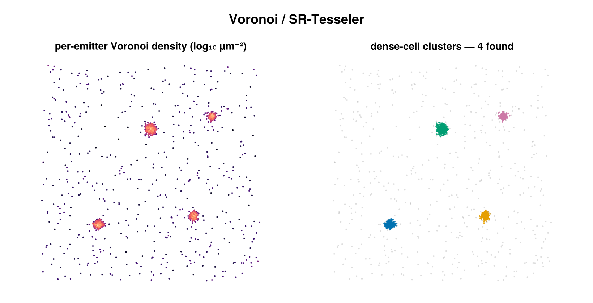

Voronoi (SR-Tesseler)
Density clustering of 2D SMLM localizations via Voronoi tessellation, following Levet et al., Nature Methods 2015. It is a cluster labeling backend selected by dispatch on a VoronoiConfig, returning a labeled SMLD and a ClusterInfo with algorithm = :voronoi.

Left: per-emitter Voronoi density (bright = dense). Right: dense cells, grouped by Delaunay adjacency, form the clusters; sparse points (gray) are noise.
Concept
Every localization is assigned a Voronoi cell — the region of the plane closer to that localization than to any other. A small cell means the point sits in a crowded neighborhood, so small cell area is a direct proxy for high local density. A point is called dense when its cell area falls below a threshold derived from the group mean, and dense points that touch along the Delaunay graph are agglomerated into clusters. There is no length scale to calibrate (no eps, no bandwidth): the only knob is a dimensionless density multiplier, which makes the method parameter-light and calibration-free.
How it works
For a group of $n$ localizations the backend builds the Delaunay triangulation of the coordinates and the dual Voronoi tessellation, clipped to the convex hull so every generator $i$ has a finite cell of area $A_i$. The local density is the reciprocal of the cell area,
\[\rho_i = \frac{1}{A_i}.\]
The threshold is taken from the group's mean cell area,
\[\bar{A} = \frac{1}{n} \sum_{i=1}^{n} A_i,\]
and a point is classified as dense when its cell is smaller than the mean area divided by the density multiplier $f$ (density_factor):
\[A_i < \frac{\bar{A}}{f}.\]
Equivalently, in density terms, $\rho_i > f \cdot \bar{A}^{-1}$ — the local density must exceed $f$ times the density corresponding to the mean area. Larger $f$ demands a smaller cell (higher density) to qualify, so fewer points pass.
Clusters are then the connected components of the dense points over the Delaunay adjacency graph: starting from each unlabeled dense point, the search walks to Delaunay neighbors that are themselves dense (the ghost neighbor -1 is filtered), flood-filling one component at a time. Each raw component whose size is at least min_points becomes a cluster; smaller components are relabeled noise (id = 0). Surviving clusters are renumbered compactly 1..K within the group.
Configuration
VoronoiConfig is a Base.@kwdef struct; every field has a default, so you only set what you want to change.
| field | default | unit | meaning |
|---|---|---|---|
density_factor | 2.0 | — | density threshold multiplier $f$; a point is dense when its cell area < mean_area / density_factor. Higher → stronger density required → fewer dense points. Must be > 0 |
min_points | 5 | count | minimum cluster size; Delaunay components smaller than this become noise. Must be ≥ 1 |
use_3d | false | bool | must be false — 3D Voronoi clustering is not supported (see caveats) |
per_dataset | true | bool | cluster within each dataset independently, so (dataset, id) uniquely identifies a cluster across a multi-dataset SMLD |
remove_unclustered | false | bool | if true, drop noise emitters (id == 0) from the returned SMLD |
using SMLMClustering
cfg = VoronoiConfig(
density_factor = 2.0, # density threshold multiplier
min_points = 5, # minimum cluster size
per_dataset = true,
remove_unclustered = false,
)
(smld_out, info) = cluster(smld, cfg)Output & interpretation
cluster(smld, cfg) returns a tuple (smld_out, info):
smld_out— a freshBasicSMLD(the input is not mutated; emitters are deep-copied). Each emitter'sidcarries its label:0for noise,1..Kfor clusters. Withremove_unclustered = true, noise emitters are dropped fromsmld_outentirely.info::ClusterInfo— run summary withalgorithm = :voronoi. Useful fields:n_locs_in,n_clustered(emitters withid > 0),n_noise(id == 0),n_clusters,cluster_sizes(size of clusterkatcluster_sizes[k]), andelapsed_s.
(smld_out, info) = cluster(smld, VoronoiConfig(density_factor = 2.0))
println("$(info.n_clustered)/$(info.n_locs_in) clustered into $(info.n_clusters) clusters")When per_dataset = true, labels are assigned independently per dataset, so a given id only identifies a unique cluster together with its dataset.
Notes & caveats
- 2D only. Coordinates are taken from each emitter's
(x, y)(in µm); the z-coordinate never participates. Settinguse_3d = trueraises anArgumentError— DelaunayTriangulation.jl does not implement 3D Voronoi tessellation. For 3D data, useDBSCANConfigorHierarchicalConfigwithuse_3d = true. - Tiny groups become noise. A tessellation needs at least 3 non-collinear points, so any group with fewer than 3 localizations is tagged all-noise (
id = 0) and contributes no cluster. - Exact duplicates are rejected. A group containing exact-duplicate
(x, y)coordinate pairs raises anArgumentError(coincident generators break cell-area lookup). Deduplicate input localizations before callingcluster. - Convex-hull clipping bias. Cells are clipped to the convex hull of the generator set, so generators on the hull get cells smaller than their true infinite-plane area. This can bias the mean-area estimate on very small groups; for SMLM datasets with thousands of localizations the effect is second-order.
- Scaling. Cluster membership is governed by the relative density threshold
mean_area / density_factor, not an absolute length, so the result is essentially invariant to a uniform global scaling of the coordinates within a group (up to triangulation degeneracies); only the density contrast between points matters.
References
- Levet, F., Hosy, E., Kechkar, A., Butler, C., Beghin, A., Choquet, D. & Sibarita, J.-B. "SR-Tesseler: a method to segment and quantify localization-based super-resolution microscopy data." Nature Methods 12, 1065–1071 (2015). doi:10.1038/nmeth.3579
- DelaunayTriangulation.jl — the pure-Julia (2D) Delaunay/Voronoi engine used to build the tessellation and adjacency graph.